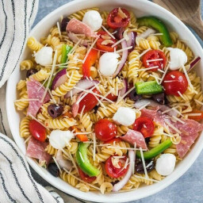

Pasta Salad

The Best Pasta Salad Recipe
This pasta salad with pepperoni, tomatoes, and provolone cheese is the best I've ever eaten, and people request it frequently. It's a very easy, light-tasting side dish for a picnic or dinner.
Ingredients
- 16 ounce package fusilli pasta
- 3 cups cherry tomatoes
- 1/2 pound provolone cheese, cubed
- 1/2 pound salami, cubed
- 1/4 pound sliced pepperoni, cut in half
- 1 large green bell pepper, cut into 1 inch pieces
- 10 ounces can black olives
- 4 ounces jar pimentos, drained
- 8 ounces bottle italian salad dressing
Steps
- Gather all ingredients
- Bring a large pot of lightly salted water to a boil. Cook fusilli in the boiling water, stirring occasionally, until tender yet firm to the bite, about 12 minutes. Drain.
- Combine fusilli with tomatoes, cheese, salami, pepperoni, green pepper, olives, and pimentos in a large bowl. Pour in salad dressing; toss to coat.
Nutrition Facts
310 Calories 18g Fat 26g Carbs 13g Protein